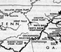

|
 Click on images to enlarge |
TENNESSEE VALLEY AUTHORITYThe Tennessee Valley Authority (TVA) is an independent public corporation founded by Congress in 1933 to control flooding, improve navigation, assist farmers, provide cheap electric power, and make "surveys of and general plans for [the Tennessee River] basin and adjoining territory . . . for the general purpose of fostering an orderly and proper physical, economic, and social development" of the Tennessee Valley. In an address to Congress on April 10, 1933, President Franklin Roosevelt asked Congress to create such an agency. Congress moved swiftly, and Roosevelt signed the TVA Act on May 18, 1933, making it a part of the New Deal's First Hundred Days. Prior to the creation of the TVA, large parts of the Tennessee Valley were in dire economic conditions. Soil erosion had ruined or damaged seven million acres of farmland. Per capita income in 1933 was only 44 percent of the national average. In Union County, Tennessee (near where the TVA built Norris Dam, its first project, 1933-36), for instance, there were no electrical utilities in 1926, crude birth rates were more than double the national average, and migration out of the area was heavy. Only 1 percent of farm owners had indoor plumbing, 4 percent telephones, and 8 percent radios. Throughout the 1920s, Nebraska Senator George Norris had tried to interest the federal government in initiating a multipurpose development project centered at Muscle Shoals, Alabama, where the government owned a large nitrate plant used for munitions during World War I and thereafter to produce fertilizer. But Republican presidential vetoes had left Norris disappointed until the Democratic landslide of 1932. Newly elected President Roosevelt's vision, first expressed in a speech delivered on January 21, 1933 (before he was even inaugurated), was considerably bolder even than that of Norris. Roosevelt envisioned an agency whose work would encompass all 201 counties of the Tennessee River basin and reach into seven states--Alabama, Georgia, Kentucky, Mississippi, North Carolina, Tennessee, and Virginia. Moreover, Roosevelt's speech made it clear that he intended for such an agency to have extremely broad powers in the area of unified regional planning and economic development. The TVA, in his view, was to be a bold experiment in regional development, a plan that, if successful, might be initiated elsewhere. The TVA Act of 1933 placed the governing of the agency in the hands of a three-person board of directors appointed by the president to nine-year renewable terms and confirmed by the Senate. As the first chairman of the board, Roosevelt chose Arthur E. Morgan, a nationally known flood control engineer and at the time president of the innovative Antioch College in Yellow Springs, Ohio. While he was the utopian visionary and planner that Roosevelt appeared to want, Morgan's rigidity, paternalism, and inability to countenance opposition would create massive internal uproar in the TVA in its early years. The other two directors were Harcourt Morgan (no relation to Arthur E.) and David Lilienthal. Canadian-born Harcourt Morgan was an agricultural specialist who was well known and extremely popular in the Tennessee Valley and was president of the University of Tennessee. He spoke for farm owners and referred to land and the Tennessee River as "our common mooring." For his part, David Lilienthal was a thirty-three-year-old attorney who came to the TVA from the Wisconsin Public Utilities Commission, where he had successfully battled the major regional private power companies. Lilienthal was a strong advocate of cheap electric power and strongly distrusted the kind of broad, top-down planning supported by Arthur Morgan. Conflict between the three original directors, therefore, was almost inevitable. Arthur Morgan wanted the TVA to produce cheap hydroelectric power that would be distributed by the existing private power companies, thus leaving the agency free to pursue his grander vision of broad regional planning, reforestation (to combat erosion), handicraft industries, and self-help community cooperatives (which Morgan envisioned would issue their own currency). Lilienthal was totally opposed to such naive idealism. He distrusted the private power interests (who had electrified only 3 percent of the valley's farms by 1933) and wanted the TVA to distribute its electricity through municipal utility boards and public rural cooperatives (which the TVA would have to create). In their many battles, Harcourt Morgan generally sided with Lilienthal, thus leaving Arthur E. Morgan increasingly isolated and frustrated. The conflict became public in 1936 when Arthur Morgan tried (unsuccessfully) to convince President Roosevelt not to reappoint Lilienthal to a second term. Arthur Morgan then openly attacked his fellow directors for malfeasance and dishonesty, although he refused to substantiate those charges when confronted by Lilienthal and Harcourt Morgan. When Arthur Morgan instead publicly demanded a congressional investigation of the agency, Roosevelt was left with no alternative but to remove him, which he did in March 1938 for "insubordination and contumacy" (a story widely circulated in the TVA was that the president chose to use the word "contumacy" because he knew most reporters would not know what the word meant and would not bother to look it up). The TVA withstood the congressional investigations of May to December 1938. While Arthur Morgan may not have been a good choice to be first chairman of the TVA’s board of directors, his forced departure severely weakened the agency's role as a bold planner, innovator, and economic developer. As the conflict between the directors hurt the TVA from within, opposition was mounting from outside the agency as well. The most serious challenges came from the private power interests who correctly saw Lilienthal's plan of TVA power distribution through public boards and cooperatives as a death knell to its monopoly of electricity distribution. In 1934 stockholders in the Alabama Power Company sued the TVA to prevent the agency from buying facilities belonging to the power company on the grounds that the TVA was unconstitutional. The first court decision went against the agency, but that decision was reversed in 1936 by the Circuit Court of Appeals and that court's ruling was upheld by the United States Supreme Court later that year (Ashwander et al. v. TVA). But three months after the circuit court decision, eighteen adjacent power companies sued the TVA on similar grounds and won a December 1936 injunction that stopped TVA dam construction and power distribution until 1938, when the district court ruled in the TVA's favor (Tennessee Electric Power Co. v. TVA). The Supreme Court dismissed the suit in January 1939. Meanwhile Wendell Willkie, president of Commonwealth and Southern, a holding company which owned most of the private power companies in the Tennessee Valley, was negotiating with Lilienthal to sell the company's valley power assets to the TVA. On August 15, 1939, in a public ceremony, Lilienthal handed Willkie a check for $44,728,300, the TVA's share of the $78,425,000 purchase of the properties of the Tennessee Electric Power Company. By the end of World War II, the TVA had wrought profound changes in what had been one of the nation's most economically depressed regions. Seven dams had been constructed on the main channel of the Tennessee River, nine dams had been built on the tributaries, and five dams had been acquired from the U.S. Corps of Engineers (Wilson) and the Tennessee Electric Power Company (Ocoee 1 and 2, Blue Ridge, and Great Falls). Fourteen million acre-feet of flood storage had been created, and a nine-foot navigation channel existed along the entire 650 miles from Knoxville to Paducah, Kentucky (where the Tennessee flows into the Ohio River). Total electric production capacity through hydroelectric and coal-fired steam and internal combustion plants equaled 2,513,102 kilowatts (an increase of 127 percent since 1940), which by 1946 provided electricity to 668,752 households. The new city of Oak Ridge, part of the important Manhattan Project which reached a high of 80,000 workers by 1945, was located in Anderson County, Tennessee, in part because of the availability of abundant electric power. Over 7,000 test demonstration farms had been set up to show valley farmers new agricultural and erosion control measures. TVA architecture in dams, power plants, and related facilities (under the supervision of Chief Architect Roland Wank) earned awe, respect, and prizes from other architects. By 1946 the TVA had acquired approximately 1.1 million acres (less than one-third of it inundated by the lakes) and had removed an estimated 72,000 people from their land, many of whom later admitted that, while they often opposed being removed, in the long run they were economically better off. In addition, malaria had been virtually removed from the Tennessee Valley. By 1953 per capita income had risen to 61 percent of the national average. From 1933 to 1958, the TVA spent approximately $2.1 billion in the Tennessee Valley, a much-needed injection of money. Although Senator Norris died in 1944 (at the age of eighty-three), he lived long enough to see his dream become a reality. Yet the decades between the end of World War II and the TVA's fiftieth anniversary (1983) were not a golden age for the agency. Even as an almost constant stream of international visitors came to marvel at the agency's many accomplishments and to learn how similar multipurpose projects might be initiated in their own nations, the TVA was beset with numerous problems that threatened one of the New Deal's brightest jewels. With the closing of the Kentucky Dam on August 30, 1944, the TVA had reached its limits of hydroelectric production. Yet estimates of future electricity needs by the TVA and the Atomic Energy Commission, together with the TVA's need to find new projects, forced the agency into the construction of massive coal-fired steam plants such as those at New Johnsonville, Kingston, and Gallatin to generate the needed electric power. By 1954 coal-fired steam plants exceeded water power generation and by 1959 were providing approximately 76 percent of the agency's electricity output. From 1950 to 1954 Congress appropriated over $1 billion to the TVA, the vast majority of it for coal-fired steam plants. The move to coal-fired steam plants, however, revived private power company and conservative opposition, principally because steam plants theoretically would allow the TVA to expand beyond the Tennessee River basin. In 1948 the Republican majorities in Congress turned back the TVA's initial request for funds to build a steam plant at New Johnsonville, a decision that was reversed with President Harry Truman's 1948 election and simultaneous Democratic control of Congress. But President Dwight Eisenhower (who once referred to the TVA as an example of "creeping socialism" and privately commented that "I'd like to sell the whole thing") and the 1953 Republican Congress blocked funding for a new coal-fired steam plant at Fulton (north of Memphis), in spite of the fact that the Atomic Energy Commission (AEC) declared that it needed the increased power. This impasse led to the infamous Dixon-Yates incident. In 1953 a private power combination of Middle South Utilities (Dixon) and the Southern Company (Yates) proposed to the Eisenhower administration a plan whereby the combination would provide private power to the Atomic Energy Commission and certain electricity distributors (including the City of Memphis) while the government would prevent the TVA from increasing its generating capacity. The TVA saw this as an extremely serious threat, since it harbored the potential for the resurgence of private power companies to meet the increasing demand for electricity. Although the scheme ultimately died amidst charges of conflict of interest, special privilege, and political cronyism (and when the City of Memphis decided to build its own facilities), few could doubt that conservative attacks on the TVA had not diminished. By the mid-1960s the TVA was the nation's largest consumer of coal, a good deal of it from strip mines in eastern Kentucky. Increased costs for coal, mounting attacks by environmentalists, and more estimates of future power needs turned the agency toward nuclear powered generation of electricity by 1966. The Browns Ferry nuclear plant was begun in 1967, Sequoyah in 1970, and Bellefonte in 1974, with more plants on the drawing boards. Since the TVA had agreed with the Eisenhower administration in 1959 that all expenses for the agency's power program would be financed only through rate increases and bond issues (and not from congressional appropriations), the extremely costly nuclear program obliged the agency to go deeply into bonded indebtedness as well as institute a 25 percent rate increase in 1970. Worse, by the 1980s construction deficiencies and safety concerns had forced the closing of all the nuclear plants and a curtailment of the entire program. As expected, rate payers (who for years had enjoyed some of the lowest electric bills in the nation) were furious. Since its founding in 1933, the TVA had become accustomed to almost constant assaults from the political right. Beginning in the late 1960s, however, attacks on the agency also began coming from the left as well. The TVA resisted environmentalists' charges that the coal-fired steam and nuclear plants were major polluters and/or environmental hazards. Ultimately the agency was forced to install expensive "scrubbers" on its coal plants' smokestacks. Too, although the TVA had instituted plans for post-strip mine land reclamation, environmentalists claimed that water pollution was widespread and land reclamation efforts were insufficient. Continued dam building programs on the tributaries of the Tennessee River also raised opposition. In Mills River, North Carolina, angry residents actually blocked a dam building project and forced the TVA to abandon it amidst charges of "pork barrel" activities. Similarly, when the agency began work on the Tellico Dam (where the Little Tennessee River flowed into the main channel near Lenoir City, Tennessee), a loose coalition of fishing enthusiasts, local residents, Cherokee Indians (whose area burial grounds would be inundated), and environmentalists raised enough opposition to gain nationwide attention. In 1973, when University of Tennessee zoologist David Etnier discovered a three-inch perch-like fish about seven miles upriver from the dam construction (subsequently named the snail darter), environmentalists believed they had found the weapon that would stop the dam. Using the 1973 Endangered Species Act (which was passed four months after Etnier's discovery), environmentalists engaged the TVA in a series of court battles, which eventually stopped the Tellico Dam's construction. In 1979 Congress granted the dam an exemption from the Endangered Species Act and the Tellico Dam was closed on November 29, 1979, much to the disgust of TVA opponents. In 1988 former Nissan Motors executive Marvin Runyon was appointed by President Ronald Reagan as chairman of the TVA board. In an effort to make good on his pledge of no electricity rate increases for three years, Runyon cut over 9,000 jobs from the approximately 49,000 employees on the TVA payroll. To be sure, the TVA's bureaucracy was a swollen one, but the cuts produced dislocations in both Chattanooga and Knoxville. As the TVA enters its seventh decade, the New Deal agency is fighting for its existence. Chairman Craven Crowell has pledged the opening of the nuclear facilities (opposed by sit-ins by environmentalists) and keeping the agency on a sound business footing. As the New Deal is gradually dismembered in the 1990s, the Tennessee Valley Authority stands as a beacon of idealistic planning, regional economic success, and bureaucratic missteps. W. Bruce Wheeler, University of Tennessee, Knoxville Suggested Reading(s): Erwin C. Hargrove, Prisoners of Myth: The Leadership of the Tennessee Valley Authority, 1933-1990 (1994); Erwin C. Hargrove and Paul K. Conkin, eds., TVA: Fifty Years of Grass-Roots Bureaucracy (1983); Michael J. McDonald and John Muldowny, TVA and the Dispossessed: The Resettlement of Population in the Norris Dam Area (1982); Thomas K. McGraw, TVA and the Power Fight, 1933-1939 (1971); William Bruce Wheeler and Michael J. McDonald, TVA and the Tellico Dam: A Bureaucratic Crisis in Post-Industrial America (1986). |
||